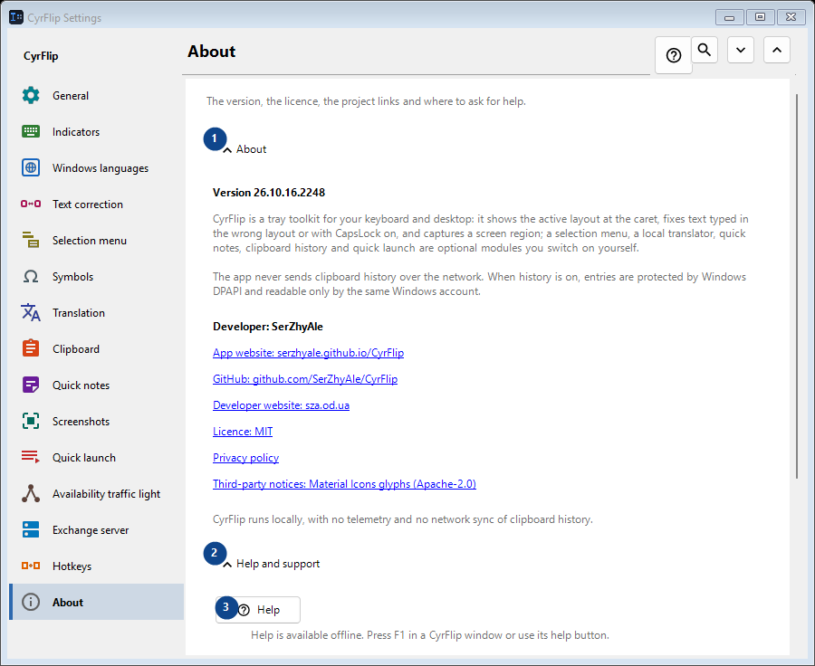
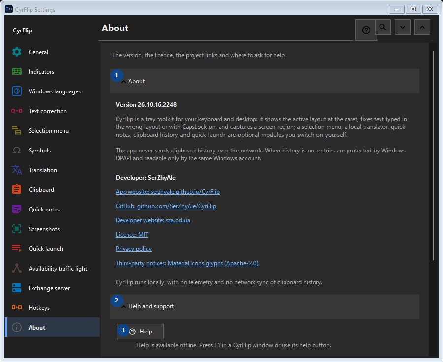

About
What this is for
The version, the licence, the project links and where to ask for help.


In this order
Settings apply immediately. There is no required order; use the groups below.
The elements
1. About
Use this command when you need the action named above. Review any confirmation before accepting it.
Your shortcuts2. Help and support
Use this command when you need the action named above. Review any confirmation before accepting it.
Your shortcuts3. Help
Help is available offline. Press F1 in a CyrFlip window or use its help button.
Your shortcuts4. Show the welcome tour..
Get to know CyrFlip and set it up.
Your shortcuts5. Diagnose caret position...
Creates a local report of how Windows and UI Automation see the caret. Use it only when the marker is missing or misplaced in a particular app.
Your shortcuts6. Send logs to the author..
Collects CyrFlip's logs into one archive and opens a message to the author with it attached. You send the message yourself - CyrFlip transmits nothing over the network. Clipboard history never goes into the archive.
Your shortcuts